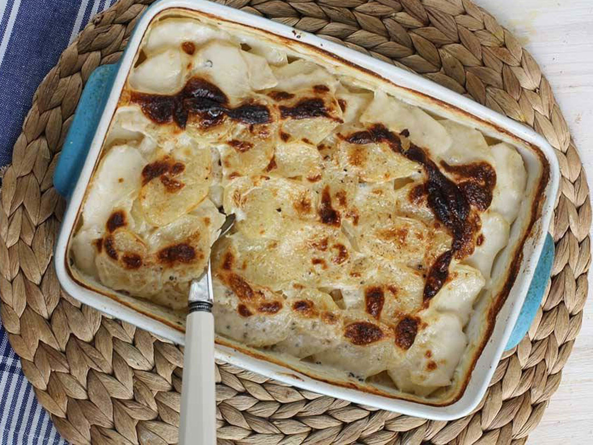

GRATIN DAUPHINOIS
Este gratin dauphinois es uno de los platos más conocidos de la gastronomía tradicional francesa. Como su nombre indica, es originario del Delfinado, en los Alpes franceses, aunque ya forma parte del patrimonio de todo el país. Se trata de un plato muy sencillo, tanto en ingredientes como en preparación y es un magnífico acompañante de los platos de carne.
Francia
INGREDIENTES
Para 4 personas
- 1kg de papas
- 2 dientes de ajo
- 300ml de leche
- 250ml de nata liquida para cocinar
- Sal
- Pimienta negra molida
- Nuez moscada molida
- Mantequilla para untar el molde
Gratin dauphinois
Salsa sopping
Pelamos las patatas, las limpiamos bien con un paño y las cortamos a mano o con una mandolina en rodajas de unos 2mm de espesor. Untamos con mantequilla un molde de horno, cubrimos el fondo con una capa de patatas repartimos por encima ajo machacado, pimienta, nuez moscada y sal. Repetimos esta operación hasta terminar con todas las patatas.
Vertemos la leche en la fuente sin que lleguen a cubrir las patatas, lo cubrimos con un papel de aluminio untado de mantequilla y lo metemos al horno precalentado a 170ºC durante unos 45/50 minutos. Probamos si las patatas están hechas pinchando con un tenedor. Vertemos la nata por encima de las patatas y volvemos a meter al horno hasta que la superficie esté dorada. Servimos bien caliente.